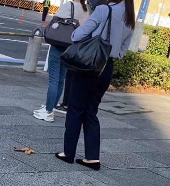

左:リュック 右:ショルダーバッグ

左:トートバッグ 中央:ビジネスバッグ 右:その他（ハンドバッグ等）
| 分類 | 移動観測 | 定点観測 | 大学定点 | 合計 |
|---|---|---|---|---|
| リュック | 約 27人 | 約128人 | 約 48人 | 約203人 |
| ショルダーバッグ | 約 8人 | 約 38人 | 約 7人 | 約 53人 |
| トートバッグ | 約 11人 | 約 30人 | 約 11人 | 約 52人 |
| ビジネスバッグ | 約 8人 | 約 24人 | 約 1人 | 約 33人 |
| その他 | 約 10人 | 約 53人 | 約 14人 | 約 77人 |
| 方法別合計 | 計 64人 | 計273人 | 計 81人 | 総計418人 |
| 分類 | 移動観測 | 定点観測 | 大学定点 | 分類別合計 |
|---|---|---|---|---|
| リュック | 約 9人 | 約 61人 | 約 27人 | 約 97人 |
| ショルダーバッグ | 約 16人 | 約 69人 | 約 14人 | 約 99人 |
| トートバッグ | 約 28人 | 約 77人 | 約 24人 | 約129人 |
| ビジネスバッグ | 0人 | 0人 | 0人 | 0人 |
| その他 | 約 8人 | 約 24人 | 約 4人 | 約 36人 |
| 方法別合計 | 計 61人 | 計231人 | 計 69人 | 総計361人 |